01
Game drives
Follow tracks into the morning light.
Mana Pools · Zimbabwe
Where the Zambezi slows down,
and the wild comes close.
An intimate, solar-powered
camp on the river's edge
Unhurried by design
Nyamatusi is a place for noticing. The low call of a hippo at dawn. Dust rising behind an elephant herd. The soft gold of the river at sunset. Here, every detail is designed to bring you closer to this remarkable landscape.
Discover the camp ↗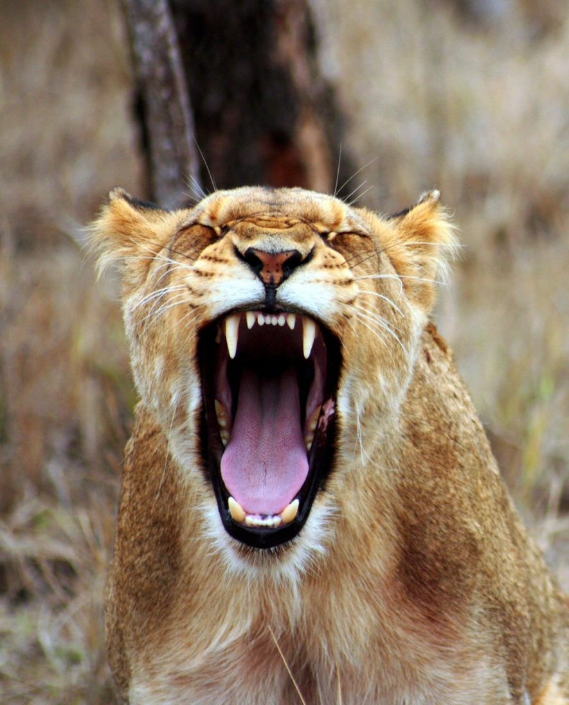
Move at the pace of the bush. Every day offers a different way into the wild.
Follow tracks into the morning light.
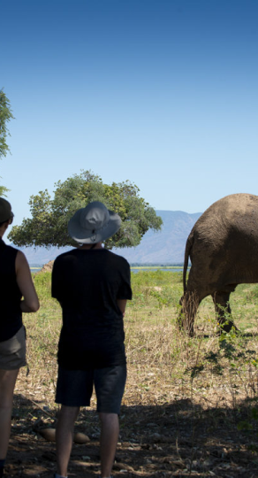
Take the slower, closer route.
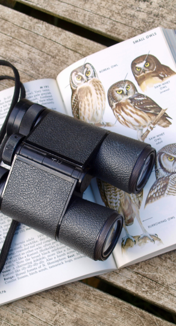
Listen for the chorus of the river.
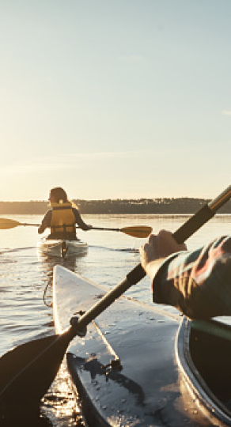
See the Zambezi from water level.
The wild rhythm of Mana Pools is never the same twice. Find elephants beneath winterthorn trees, lions on the floodplain, and a sky that turns every evening into a small ceremony.
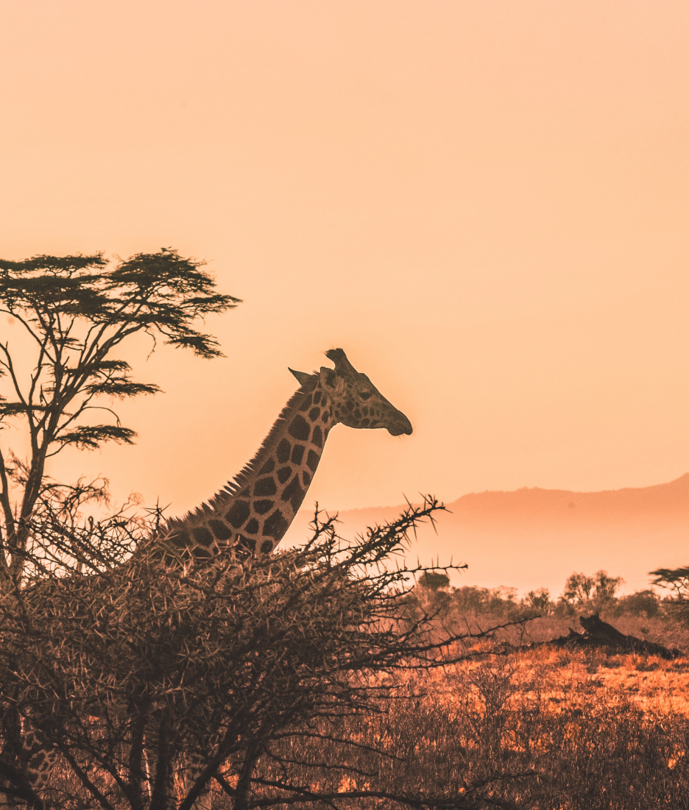
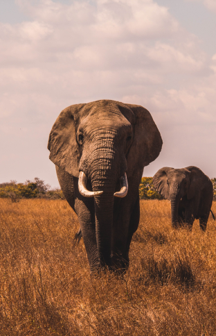
Recent sightings ↗Thoughtfully paced journeys that make room for both adventure and stillness.
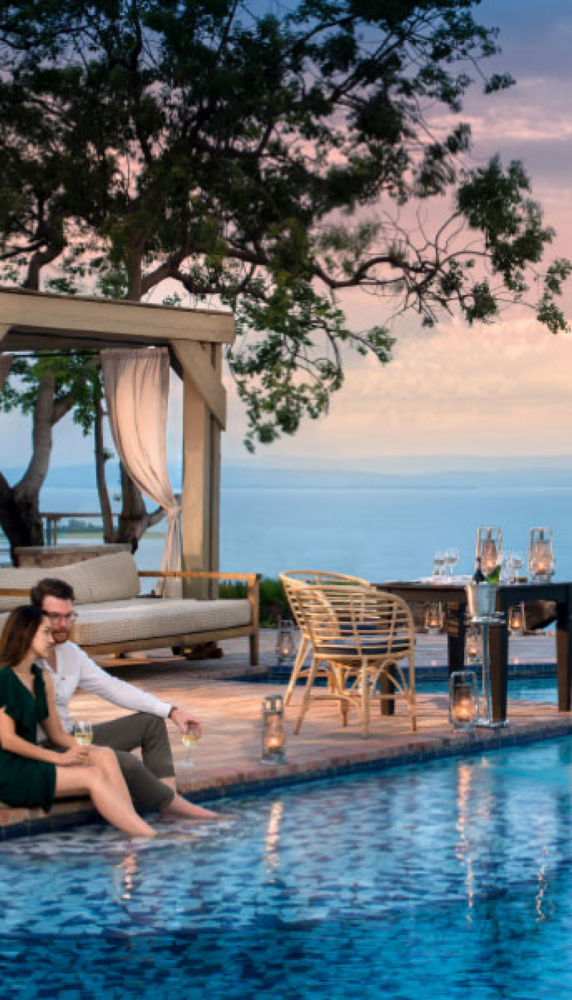
The signature stay
Seven nights between river, forest and sky.
Explore itinerary ↗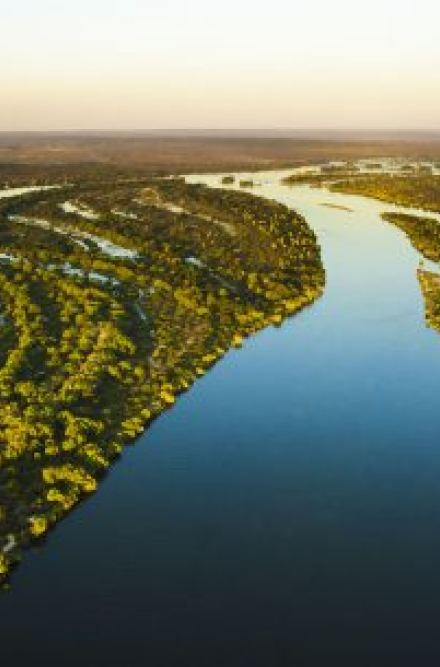
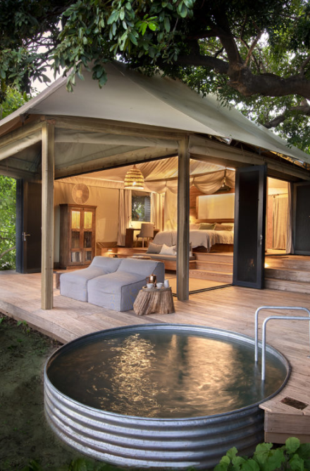
There are places that you visit,
and places that change your pace.
— A guest, February 2024
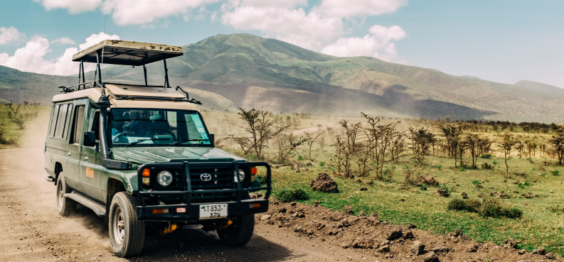
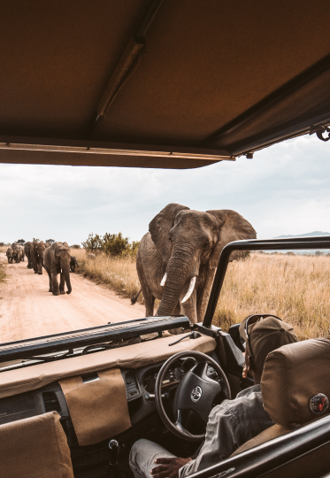
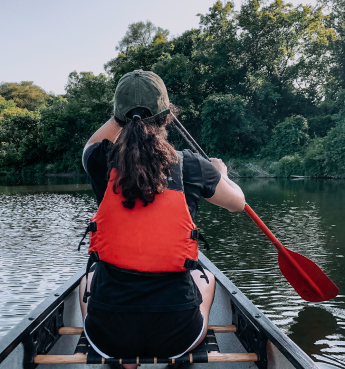
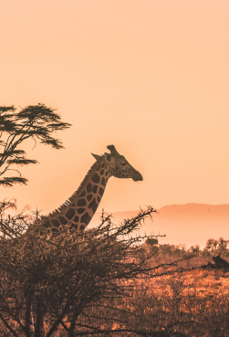
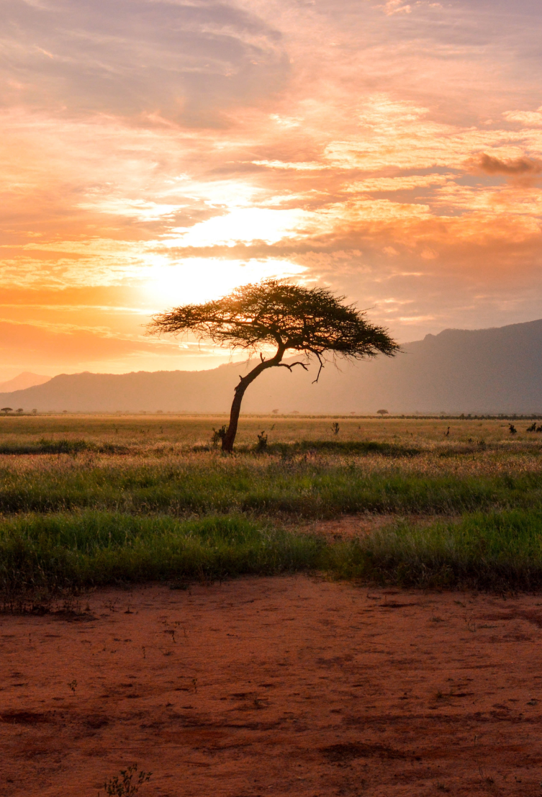
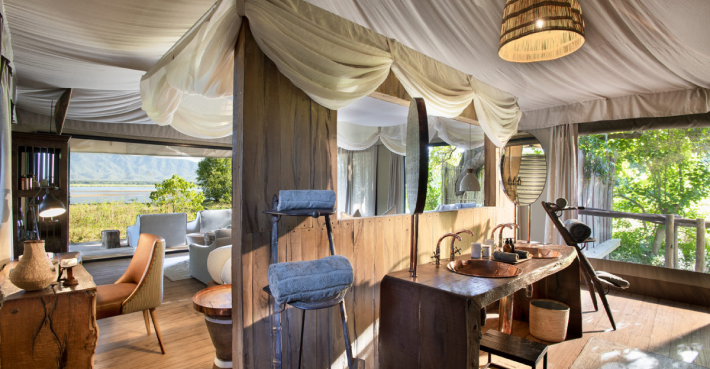